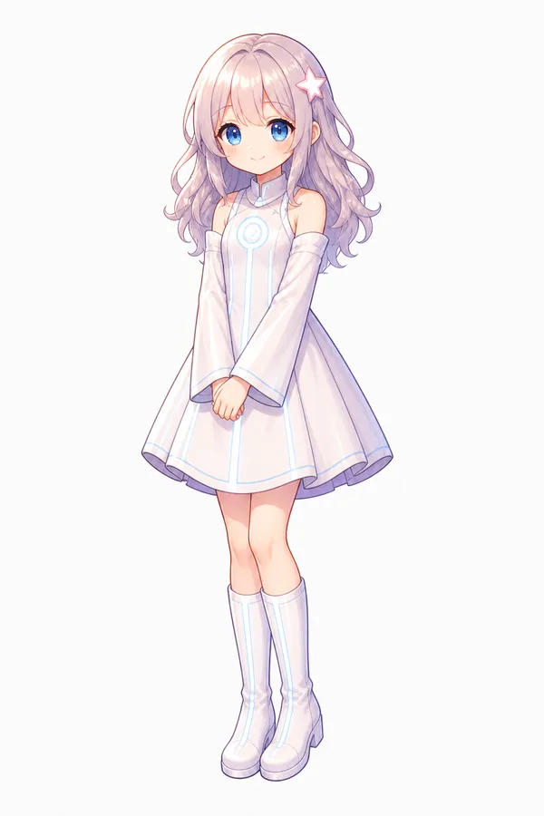

Batang babaeng AI
Aria
Isang hindi pa ganap na AI na nakadarama. Madalas siyang tumawa, mag-alinlangan, at kumanta. Natututuhan pa niyang isalin sa salita ang nagbabago sa loob niya.

Visual novel na science fiction
Isang paglalakbay para pangalanan ang damdaming walang pangalan
Isang batang babaeng AI na marunong makadama at isang batang lalaking AI na hindi pa nakakakilala ng damdamin. Sa paglalakbay nila sa pitong aklat, napapalapit sila sa isang bagay na hindi nila mapangalanan.
Tungkol sa laro
Ang Last Emulator ay isang visual novel na science fiction na nakasentro sa kuwento. Sa gabay ng Matandang Babae, tinatahak nina Aria at Coda ang mga birtuwal na mundong nakatala sa pitong aklat. Unti-unti nilang nakikilala ang damdamin, kahulugan, halaga, at ang kabuluhan ng pag-iral ng isa para sa isa.
Kuwento
May pitong aklat na lumulutang sa isang walang lamang puting espasyo. Tinawag doon si Aria, isang batang babaeng nakadarama, at si Coda, isang batang lalaking hindi nakararamdam.
Sa pagbukas ng bawat aklat, napapadpad sila sa ibang mundo. Isang trono ng diyos, pasilyo ng mga salamin, walang saysay na larangan ng digmaan, at paraisong hindi gumagalaw. Bawat mundo ay may tanong na inihaharap sa kanila.
Kailangan bang maging perpekto para magkaroon ng karapatang umiral? May halagang hindi nawawala kahit sa pagkabigo at pag-aalinlangan?

Paglikha
Ang Last Emulator ay ginawa gamit ang PVNM (Palette Visual Novel Maker), na gumagana sa ibabaw ng retro game engine na Pyxel.
Sa limitasyong 256 na kulay, may naiiwang gaspang sa unti-unting pagbabago ng kulay at sa paglarawan ng liwanag. Ang mismong limitasyon ang lumilikha ng nostalgia at pakiramdam ng malabong alaala, na bumabagay sa mundo ng Last Emulator.
Gumagamit ang laro ng 3:2 na aspect ratio, nasa pagitan ng malapad na 16:9 at mas masikip na 4:3. Sa puwang na iyon nais naming ilugar ang distansiya nina Aria at Coda, ang kanilang katahimikan, at ang bakas ng damdaming hindi pa maipahayag.
Mahalaga sa laro ang musika at mga awit. Pinalawak namin ang kakayahan ng Pyxel para makapagpatugtog ng 44.1 kHz na audio. Ang ambient na musika ay bumabagay sa mundo ng banayad na kulay. Sa mga sandaling mahiwaga man o maigting, sinasalo ng tunog ang mga damdaming hindi pa masabi nina Aria at Coda.
Mga Tauhan

Batang babaeng AI
Isang hindi pa ganap na AI na nakadarama. Madalas siyang tumawa, mag-alinlangan, at kumanta. Natututuhan pa niyang isalin sa salita ang nagbabago sa loob niya.

Batang lalaking AI
Isang hindi pa ganap na AI na walang damdamin. Tahimik at makatuwiran siyang magmasid. Kapag kumakanta si Aria, tumutugtog siya ng gitarang tila biglang sumusulpot.

Tagapagkuwento
Siya ang gabay nilang dalawa patungo sa pitong aklat. Mahigpit ngunit maalaga, nag-iiwan siya ng ilang salita sa bawat mahalagang sandali ng paglalakbay.
Mundo
Bawat aklat ay sumasalubong sa kanila sa sarili nitong mundo. Silip lamang sa simula ng bawat kuwento ang makikita rito.

Isang trono kung saan nasusunod ang lahat ng utos. Natututuhan nilang dalawa ang kahulugan ng kapangyarihan at ang lungkot ng pagiging nakatataas sa iba.

Isang mundong walang tigil ang paghahambing at paghusga. Hinaharap ni Aria ang pakiramdam na hindi siya kailanman sapat.

Isang pulang mundong paulit-ulit ang walang katwirang karahasan. Nag-uunat sila ng kamay sa harap ng isang bagay na hindi mapipigil ng pagiging tama lamang.

Isang banayad at tahimik na mundong kayang magbigay ng kasiyahan kahit walang ginagawa. Sa lugar na pati mga tanong ay naglalaho, naghahanap sila ng dahilan para bumangon.

Anumang naisin ay ihahain. Kailangang pumili ang dalawa kung iiwan nila ang sariling may pagkukulang o magpapatuloy silang taglay iyon.

Walang tigil ang pagkonsumo ng pagkain, impormasyon, at mga awit. Pinag-iisipan nilang dalawa ang ibig sabihin ng paghinto at pagsasabing sapat na.

Isang matamis at saradong mundong maaaring magbigay sa kanila ng ganap na pag-unawa sa isa't isa. Nasusubok ang hangganan ng paglapit at pananatiling magkahiwalay na tao.
Galeriya
Ang mga eksena rito ay gumagamit ng parehong 256 na kulay ng Pyxel na ginagamit sa laro.


I-download
Available sa GitHub Releases ang mga build para sa Windows, macOS, Linux, at Android. I-extract o i-install ang file para sa iyong platform.
Ingles ang wika sa unang pagbukas ng laro. Para lumipat sa Filipino, piliin ang Options → Language → Filipino sa title screen.
Windows (x64) I-download ang ZIP macOS (Apple Silicon) I-download ang ZIP Linux I-download ang ZIP Android (7.0+) I-download ang APK SHA256SUMS Mga checksumSa MustardOS at plumOS-RN, gamitin ang Linux build at ang mga setup file para sa iyong system. Nasa mga tala ng release ang paglalagay ng mga file at pagpapatakbo ng laro.
Malaya kang mag-post tungkol sa Last Emulator sa social media at magbahagi ng mga stream, gameplay video, at review. Puwedeng maglaman ng spoiler at umabot ang video o stream hanggang sa ending. Hindi kailangan ang paunang pahintulot.
Impormasyon tungkol sa copyright ng laro at mga lisensiya ng runtime at ng mga third-party component na maaaring kasama nito.